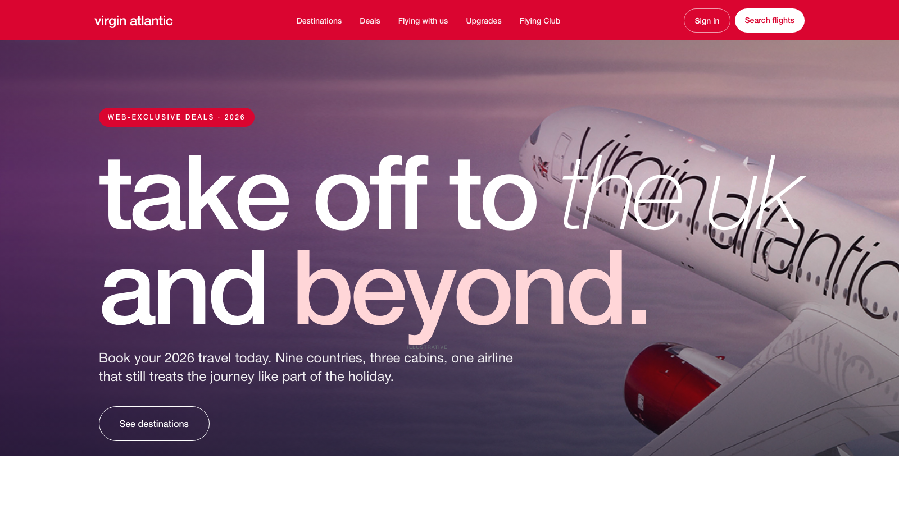
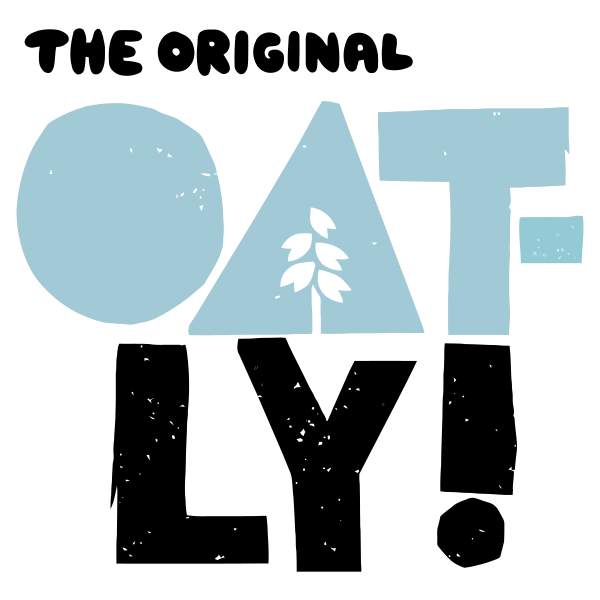
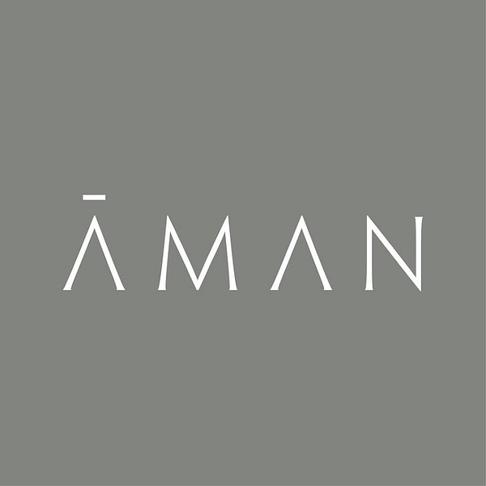

A platform migration sold on Core Web Vitals never reaches the exec table. A brand-presence refresh does. Bundle them — and design fatigue becomes the wedge that turns a tech project into a board-level rebuild.

From assembling pages out of shared parts → to generating unique pages that share the same rules.
Implementation partners shipped a library — Hero, Card Grid, Accordion, Tabs — and marketers composed pages from the shelf. Sites got fast by getting boring. It worked.
AI agents now generate bespoke, production-quality HTML — scroll-driven motion, cinematic transitions, three-week designs in an hour — from a prompt and a brand guide. And designers know how to drive them.
Every page can be its own page again — provided the brand keeps the rules. The library's job moves up a level: from shape to guardrails.
The Apple iPad page. The Spotify campaign that moves like a film. The Nike launch that feels nothing like a template. Six-figure projects with months of lead time — that ceiling is gone.
Not just hero activations that survive the annual budget. Every market launch, every product moment, every micro-site — distinct, on-brand, deserving of attention.
Designers work on the live page. Marketing edits in-context. Translations run in parallel. SEO tunes the real thing. Nothing waits on anything.
Type, color, spacing, assets — enforced at the platform. AI review at publish: brand, a11y, perf, legal. Markets get latitude; the brand keeps the non-negotiables.
Brands tire of their visual identity every 12–24 months. The impulse is real — but expensive enough that most settle for staying static between major rebrands. Bundling the refresh with a platform migration changes the math: one project, two outcomes — a modern stack and a modern identity. Performance, SEO, and LLM visibility ride along by default.
Crawls the live site, diagnoses pitfalls, proposes fresh directions, regenerates every page under a new design system. Palette, typography, voice — pinned, so identity survives.
Drop AI prototypes into a known folder; out comes a publishable EDS site with the authoring stack already wired: in-page editing, scheduling, drafts, edge routing.
Stardust outputs clean, semantic markup. Snowflake maps it onto Edge Delivery's blocks without a hand-off step. The migration to EDS isn't a step — it's the same artifact, reframed.
Slicc — a browser-native AI agent — loads Stardust and Snowflake as skills. The user opens Slicc, points it at a URL, and asks:
What comes back is a working EDS site that looks better than the original. No discovery call. No design brief. No developer in the loop.
→ The pilot is the wedge. This is the motion that scales it.
A Stardust before/after lets AEM walk into brand exec rooms with something tangible — your site, redesigned. Conversations move up the org; deals close on the strength of one screen.
When a customer commits, the same pipeline produces a deployable EDS site. The cost-to-migrate story becomes credible. Shorter sales cycles and faster onboarding both compound into AEM growth.
Get to MVP quickly, run it with a handful of selected brands, and learn how the idea is received before scaling into the full PLG product.

